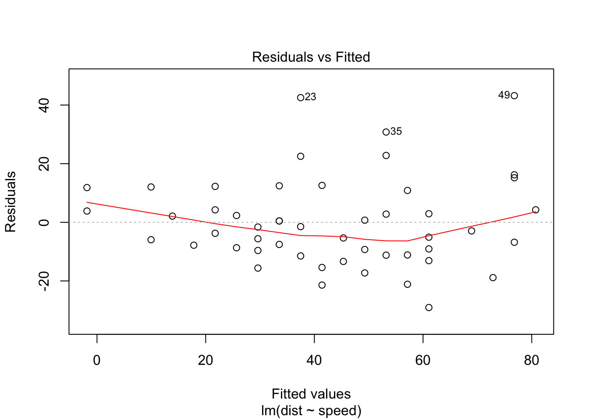
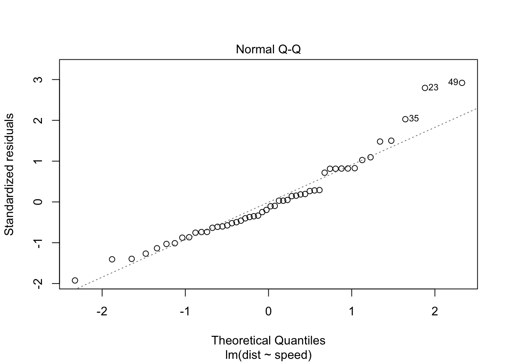
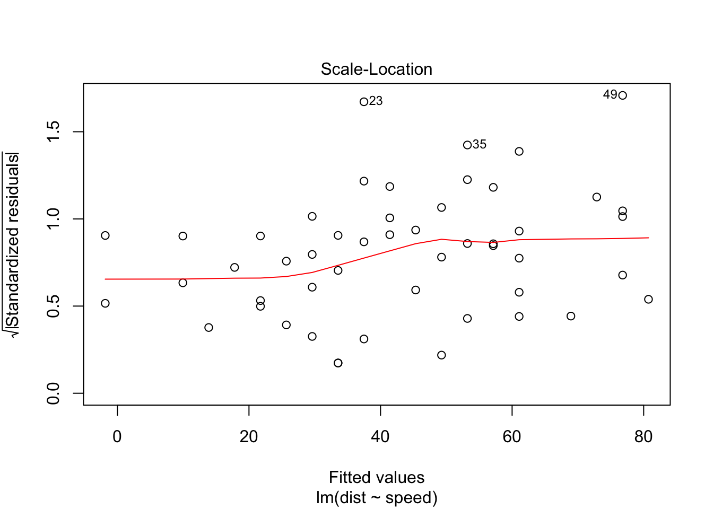
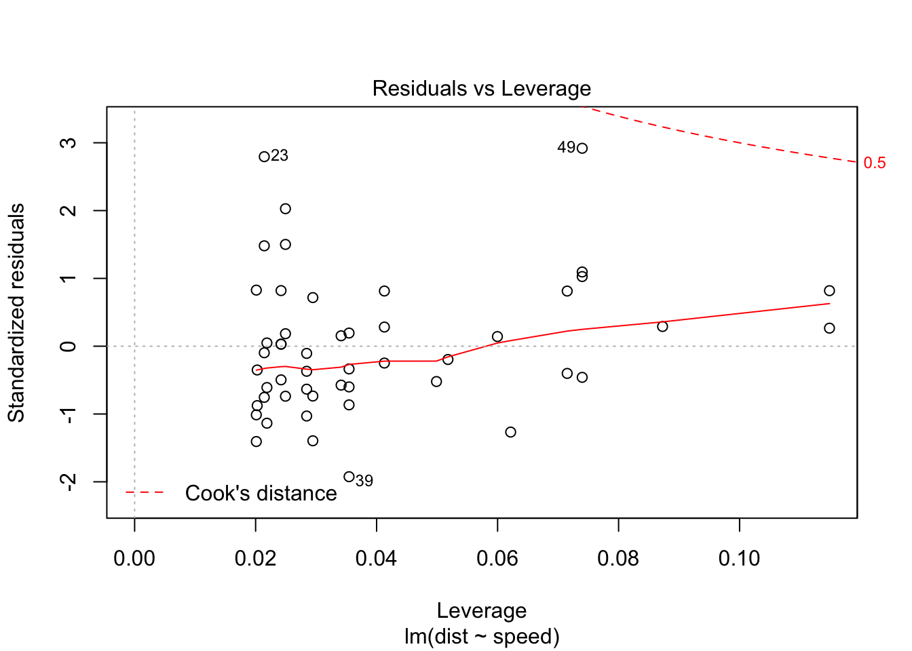

The tutorial files can be found at https://github.com/rbind/yihui/issues/14
All slides available at https://slides.yihui.name/2017-DSM-rmarkdown-Yihui-Xie.html#1
Before you get started learning how to create many different types of documents with R Markdown, you’ll have to run the following code:
install.packages(c('rmarkdown', 'bookdown', 'tufte', 'rticles', 'xaringan', 'devtools'))
devtools::install_github(c('rstudio/blogdown'))You’ll also have to download LaTeX.
YAML
First off, you need to establish your YAML metadata at the beginning of your document. (Yihui told us YAML stood for “Yet Another Markdown Language”, but the internet assures me it’s “YAML Ain’t Markup Language”)
To create YAML, put text between dashes like this:
---
title: “A Simple Regression”
author: “Nathan Carter”
output:
html_document:
toc: true
---This determines the various characteristics of your document, including everything from font sizes to web themes to PDF output margins.
Below is an example of how to insert R code into your post. Simply insert the code ```{r}, and then wrap it at the end with another ```. For example:
# ```{r} (ignore hash)
# We built a linear regression model.
fit <- lm(dist ~ speed, data = cars)
b <- coef(fit)
plot(fit)
# ``` (ignore hash)To insert the result of your code, simply refer to the variable created in your code with a wrap of ``. For example: The slope of the regression is 3.9324088 (This is r b[2] with a wrap of ``).
Params
The command params allows you to have dynamic content in your document. Put it in the YAML, and you can place content throughout your document using things like:
---
title: “A Simple Regression”
author: “Nathan Carter”
params:
x1: A
x2: 7
city: Sydney
output:
html_document:
toc: true
---Then place like params$x1 or params$x2 somewhere throughout your R code, and you can use rmarkdown::render(‘file.Rmd’, params = list(x1 = 9)) to change things on the fly.
Pandoc’s Markdown
- You should read the Pandoc Manual at least once to learn the possibilities of Pandoc’s Markdown: http://pandoc.org/MANUAL.html#pandocs-markdown
- Two major contributors of Pandoc: Markdown extensions, and multiple output formats
- Originally designed for HTML, but makes it easy to export to PDFs
Outputs
An output format is an abstraction in rmarkdown as a uniform (programming) interface to deal with
- knitr options (chunk options, hooks, package options, …)
- pandoc options (–from, –to, –latex-engine, …)
- pre/post-processors
- and other options (e.g., whether to keep the intermediate .md)
Outputs can be created via rmarkdown::output_format(). Note the base_format argument: output formats are extensible. If you only want to modify a few options of an existing format, you can use it as the base, e.g., you can add a custom post-processor on top of the existing one.
Built-in formats:
- beamer_presentation
- github_document
- html_document
- ioslides_presentation
- md_document
- odt_document
- pdf_document
- rtf_document
- slidy_presentation
- word_document
YAML options for output formats
The YAML metadata
---
output:
html_document:
toc: true
theme: "united"
fig_height: 6
---will be translated to
rmarkdown::render(
'input.Rmd', html_document(
toc = TRUE,
theme = "united",
fig_height = 6
)
)the output of which looks like this:
> str(rmarkdown::html_document())
List of 11
$ knitr :List of 5
..$ opts_knit : NULL
..$ opts_chunk :List of 5
.. ..$ dev : chr "png"
.. ..$ dpi : num 96
.. ..$ fig.width : num 7
.. ..$ fig.height: num 5
.. ..$ fig.retina: num 2
..$ knit_hooks : NULL
..$ opts_hooks : NULL
..$ opts_template: NULL
$ pandoc :List of 6
..$ to : chr "html"
..$ from : chr "markdown+autolink_bare_uris+ascii_identifiers+tex_math_single_backslash"
..$ args : chr [1:11] "--smart" "--email-obfuscation" "none" "--self-contained" ...
..$ keep_tex : logi FALSE
..$ latex_engine: chr "pdflatex"
..$ ext : NULL
$ keep_md : logi FALSE
$ clean_supporting : logi TRUE
$ df_print : chr "default"
$ pre_knit :function (...)
$ post_knit :function (...)
$ pre_processor :function (...)
$ intermediates_generator:function (original_input, encoding, intermediates_dir)
$ post_processor :function (metadata, input_file, output_file, clean, verbose)
$ on_exit :function ()
- attr(*, "class")= chr "rmarkdown_output_format"HTML Documents
Some options:
theme: you can set it to NULL to reduce the HTML file size significantly (because of Bootstrap)- For a gallery of themes, visit Bootswatch.
css: tweak the styles of certain elements (learn to use the Developer Tools of your web browser)template: a custom Pandoc template
Pandoc templates:
- Official Pandoc templates: https://github.com/jgm/pandoc-templates
- rmarkdown’s templates: https://github.com/rstudio/rmarkdown/tree/master/inst/rmd
- A minimal example:
(<html>
<head>
<title>$title$</title>
$for(css)$
<link rel="stylesheet" href="$css$" type="text/css" />
$endfor$
</head>
<body>
$body$
</body>
</html>Simple customisation
There are many options you can set in YAML. Two types of options:
- Options for Pandoc: make sure you read the Pandoc manual to know the possible options (e.g., for LaTeX output: http://pandoc.org/MANUAL.html#variables-for-latex)
fontsize: 12ptdocumentclass: book-monofont: "Source Code Pro"# for XeLaTeX output- Options for an R Markdown output format under the output field in YAML: consult the specific R help page.
You can certainly create your own template, but it may not be necessary to do so if your problem can be solved by setting a few options in YAML.
Deeper customisation
A common use case: inject a snippet of code to the HTML <head> (e.g., JS/CSS code), or the LaTeX preamble (e.g., load some LaTeX packages before \begin{document}).
output:
html_document:
includes:
in_header: "header.html"
before_body: "before.html"
after_body: "after.html"
pdf_document:
includes:
in_header: "preamble.tex"If you’re looking for deeper customisation, simply write a package with custom output formats! Let’s study some examples in R Markdown…
Example: odt_document
rmarkdown::odt_document
function (fig_width = 5, fig_height = 4, fig_caption = TRUE,
template = "default", reference_odt = "default", includes = NULL,
keep_md = FALSE, md_extensions = NULL, pandoc_args = NULL)
{
knitr <- knitr_options(opts_chunk = list(dev = "png", dpi = 96,
fig.width = fig_width, fig.height = fig_height))
args <- c()
if (!is.null(template) && !identical(template, "default"))
args <- c(args, "--template", pandoc_path_arg(template))
args <- c(args, includes_to_pandoc_args(includes))
if (!is.null(reference_odt) && !identical(reference_odt,
"default")) {
args <- c(args, "--reference-odt", pandoc_path_arg(reference_odt))
}
args <- c(args, pandoc_args)
output_format(knitr = knitr, pandoc = pandoc_options(to = "odt",
from = from_rmarkdown(fig_caption, md_extensions), args = args),
keep_md = keep_md)
}
<environment: namespace:rmarkdown>Example: rtf_document
- https://github.com/rstudio/rmarkdown/blob/master/R/rtf_document.R
- pre-processor (protect raw RTF content)
- post-processor (restore raw RTF content)
raw RTF looks like this
{\rtf1\ansi{\fonttbl\f0\fswiss Helvetica;}\f0\pard-
This is some {\b bold} text.\par
}R Markdown extensions
rticles
- The key idea: LaTeX templates for Pandoc (through the template argument of output format functions)
- Currently supported journals: https://github.com/rstudio/rticles/tree/master/inst/rmarkdown/templates
- Most rticles format functions just calls
rmarkdown::pdf_document()and modifies the returned list (a natural hack), instead of usingrmarkdown::output_format()
tufte
Genuinely the most beautiful web-based documents I’ve seen in a long time. Based on the principles of information design created by Edward Tufte.
- https://github.com/rstudio/tufte
- http://rstudio.github.io/tufte/ - comprehensive example
- History: originally
rmarkdown::tufte_handoutand only supports PDF articles - tufte extended the style to PDF books and HTML documents
- Key pieces:
- Tufte-LaTeX
- Tufte-CSS
- knitr output hooks
flexdashboard
- https://github.com/rstudio/flexdashboard
- Responsive and interactive dashboards
- http://rmarkdown.rstudio.com/flexdashboard/examples.html SO MANY GOOD THINGS
remark.js & xaringan
xaringan
- https://github.com/yihui/xaringan
- Porting the JavaScript library remark.js for slideshows into R
- Dirty hacks
- Its Markdown is not Pandoc’s Markdown (bypasses Pandoc; how?)
- Still uses the rmarkdown output format framework because a lot of things are easier: customise CSS, add HTML dependencies (HTML widgets), write out the initialisation JS code of remark.js (remark.create()), and so on
- https://github.com/gnab/remark/wiki/Markdown
- MAKE SURE TO USE YOLO: TRUE IN MOON READER
remark.js vs xaringan
Some differences between using remark.js…
- Start with a boilerplate HTML file;
- Plain Markdown;
- Write JavaScript to autoplay slides;
- Manually configure MathJax;
- Highlight code with -
- Edit Markdown source and refresh browser to see updated slides;
… and using xaringan
- Start with an R Markdown document;
- R Markdown (can embed R/other code chunks);
- Provide an option autoplay;
- Highlight code with
{{}}; - The RStudio addin “Infinite Moon Reader” automatically refreshes slides on changes;
bookdown
- https://slides.yihui.name/2016-CSU-bookdown-Yihui-Xie.html
- https://github.com/rstudio/bookdown
- Organize multiple R Markdown documents into a “book”
- Multiple output formats
- Markdown extensions (figure/table numbers, equations, theorems, …)
- Extensive use of regular expressions (
grep(),gregexpr(),regmatches(), …)
- Extensive use of regular expressions (
- https://slides.yihui.name/2016-CSU-bookdown-Yihui-Xie.html#(10)
R code
There are two types of R code in R Markdown/knitr documents: R code chunks, and inline R code. The syntax for the latter is r R_CODE, and it can be embedded inline with other document elements. R code chunks look like plain code blocks, but have {r} after the three backticks and (optionally) chunk options inside {}, e.g.:
1 + 1## [1] 2rnorm(10) # 10 random numbers## [1] 1.0330509 -0.6322628 -1.6185826 0.3060769 1.9311521 -0.9796228
## [7] -1.4131238 0.9346530 1.3716589 0.1257779plot(dist ~ speed, cars) # a scatterplot
Figure 1: A figure caption.
blogdown
- https://github.com/rstudio/blogdown
- Creating websites based on R Markdown and Hugo
- https://slides.yihui.name/2017-rstudio-webinar-blogdown-Yihui-Xie.html
All these and more are available to you in R! Simply create a new R Markdown document using RStudio, and select one of the many templates available.